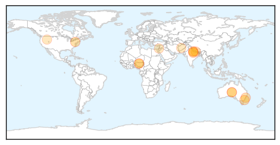

Measles
30-Day Web Trend
0 alerts, 0 warnings

30-Day Twitter Trend
3 alerts, 0 warnings

Article Locations

Article Confidences

Top Articles:
- 0.980
- Anti-Vaccine Parents Largely Blamed For Disneyland Measles Outbreak
- 0.967
- Disneyland Measles Outbreak Confirmed to Be Linked to Low Vaccination Rates
- 0.965
- Measles Outbreak Probably Caused by General Low Vaccination Rates
- 0.912
- Low Vaccination Rates To Blame for Disneyland Measles Outbreak
- 0.900
- WHO sounds alarm bell in Iraq
- 0.841
- Aliso Niguel High School
- 0.837
- Parents Who Decline to Vaccinate Their Children Likely To Be Blamed for Disneyland Measles Outbreak, Study Says
- 0.835
- Low vaccination rates likely behind Disney measles outbreak
- 0.768
- New cases of disease reported on need-to-know basis
- 0.753
- Measles prevention campaign underway in Vanuatu, amid fears of disease outbreak - UNICEF
- 0.741
- Outbreak of measles also at Idrija-Cerkno region :: Prvi interaktivni multimedijski portal, MMC RTV Slovenija
- 0.695
- Data suggest low vaccination rates, measles outbreak related
- 0.693
- Less Than 86% Of Disney Guests Were Vaccinated Against Measles
- 0.685
- Measles prevention campaign gets underway in Vanuatu
- 0.671
- Kyrgyz Lauch Mass Vaccination as Measles Cases Soaring
- 0.640
- Anti-vaccination Activists and Campaigns Held Responsible For Recent Measles Outbreak Linked to Disneyland
- 0.569
- Imojev (Japanese encephalitis vaccine) Drug
- 0.551
- UN Raises Death Toll in Vanuatu to 24 After Passage of Cyclone Pam
- 0.503
- Solana Beach School District backs bill ending personal belief exemption for vaccinations
Top Tweets:
-
No tweets found for Mar 17, 2015
Influenza
30-Day Web Trend
0 alerts, 0 warnings

30-Day Twitter Trend
0 alerts, 0 warnings

Article Locations
Article Confidences

Top Articles:
- 0.994
- Flu cases rise across region as they fall statewide: News
- 0.991
- No bird flu scare in UP, says government
- 0.988
- Free flu vaccines for Indigenous children as experts warn of dangerous flu season ahead
- 0.946
- 'Bad strain' of flu from northern hemisphere could be coming to Australia
- 0.938
- Flu vaccinations delayed
- 0.926
- No bird flu scare in UP, says government
- 0.922
- N600m compensation coming for farmers affected by avian influenza
- 0.882
- Bird flu: Dudhwa National Park on high alert
- 0.880
- Bird flu: Dudhwa National Park on high alert
- 0.832
- Bird flu: FG earmarks N600m compensation to farmers
- 0.757
- Free flu vaccines for Indigenous children
- 0.751
- March 17, 2015 Archives
- 0.751
- March 17, 2015 Archives
- 0.751
- March 16, 2015 Archives
Top Tweets:
-
No tweets found for Mar 17, 2015